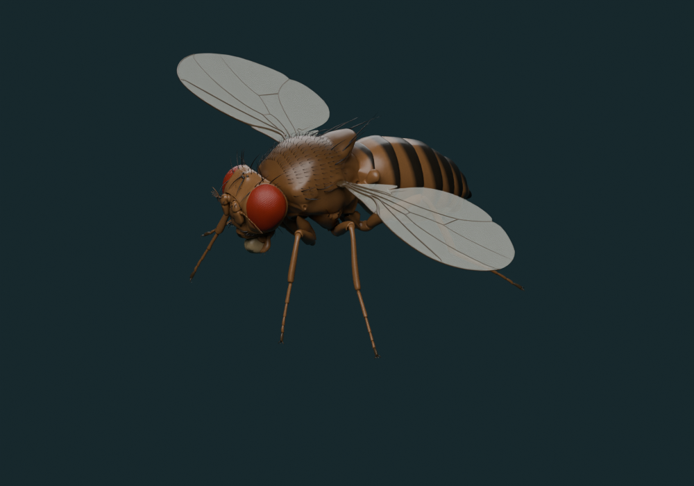
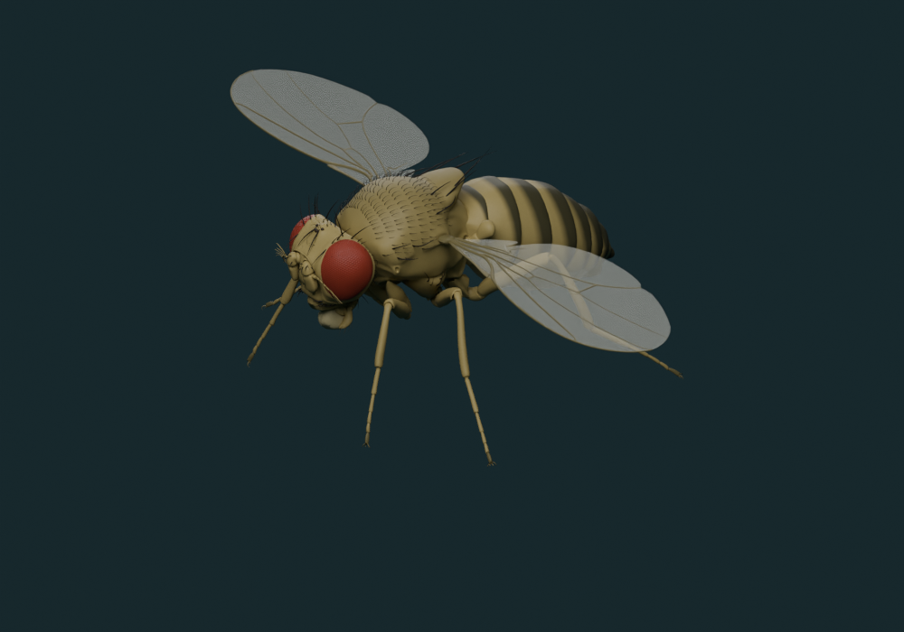

01 / PHOTO-GUIDED MATERIALS
A softer, less glossy cuticle
Olive-tan cuticle replaces the orange-bronze cast. Posterior abdominal bands have softer edges, fine roughness reduces uniform highlights, and wing membranes have lower opacity. The mesh, UVs, skin weights, joints and both animation clips are unchanged.


Matched Blender camera, lights and rest pose. These are model renders, not photographs or measured living posture. Render code.
What the photographs support—and what they cannot establish
Female lateral and dorsal photographs inform the tan cuticle, red eyes, dark abdominal bands and translucent wings. Nicola White’s reference photographs are linked, not redistributed. The specimen viewer also links a separately licensed female reference photograph.
Lighting, age, genotype and preparation affect appearance. No calibrated reflectance, color error, wing thin-film interference or perceptual realism score is available. Fine procedural texture is an authored approximation. This revision improves the material treatment; full photorealism is not established.
02 / INDEPENDENT WALKING RECORDINGS
Compare all six legs
Three flies from the NeuroMechFly study supply ten seconds of tracked 3D landmarks each. They are compared with the frozen 0.61-second FlyBody replay. The recordings differ in individual, speed, duration and locomotor conditions.
| Leg | Model knee 5th–95th percentile | Recorded knee 5th–95th percentile | Angle distribution distance | Foot spread model / recorded |
|---|
LF/RF = left/right front; LM/RM = middle; LH/RH = hind. Knee angles are physical interior angles. Distribution distance is the 1D Wasserstein distance in degrees, not synchronized-frame error. Foot spread is RMS claw displacement relative to the coxa, centered on its mean and normalized by femur length; it is not stride length or contact accuracy. Percentile ranges describe samples, not confidence intervals.
Sampling and measurement decisions
Original DeepFly3D landmarks are used at 100 Hz, avoiding interpolation being mistaken for extra biological measurements. The 38-landmark ordering is pinned in the source manifest. Three-landmark interior angles avoid comparing incompatible Euler joint conventions. Model landmarks come from the source MuJoCo kinematic chain; no dynamics run in the audit. Exact animation preservation is tested separately.
The source replay began with 150 fps top-view tracking of 13 landmarks, including six leg tips. Its 500 Hz fitted output is interpolated; knee positions and vertical swing paths are inferred. This is a key reason to compare it with independently tracked 3D joints. FlyBody methods.
There is no paired recording of this individual and no synchronized gait phase. Ground penetration, slip, duty factor, force and whole-body path errors remain unmeasured. No 95% confidence interval is reported from three heterogeneous flies.
03 / UNTREATED TETHERED FLIGHT
Frequency is one check, not a flight model
The animation’s source clock is 218 Hz. Compare it with untreated records in Rauscher & Fox’s deposited recordings. The browser shows two wingbeats over four seconds—436× slower for inspection.
Medians and 5th–95th percentiles summarize recording-level values. Recordings can come from the same animal; counts are not counts of independent flies. They are not 95% confidence intervals.
Inclusion rules and limitations
Haltere records use the supplied untreatedanimal flag: the downloaded file lacks the README-described treatment field. Wing records require treatment = 0. A Welch spectrum uses each record’s longest continuous finite segment of at least one second; one untreated record fails that length rule. Missing samples are never joined across gaps. Peak search: 100–min(350, 0.45 × sampling rate) Hz. This is an operational frequency estimate, not manual validation of every wingbeat.
The MATLAB opaque individual-identifier table was not decoded, so there is no individual-level resampling or confidence interval. The newer multi-species Diptera archive contains D. simulans, which was excluded from this species-specific comparison.
04 / REPRODUCIBLE & REVIEWABLE
Keep the failures beside the results
- No calibrated color/reflectance error or independent human realism panel.
- No matched free-flight 3D trajectory, contact/slip measurement or population-level accuracy claim.
- No live neural controller, measured neural activity or internal physiology simulation.
PhenoVoxel computational audit, 13 November 2026. This is not a peer-reviewed validation study. Upstream experimental evidence and local calculations are identified separately.